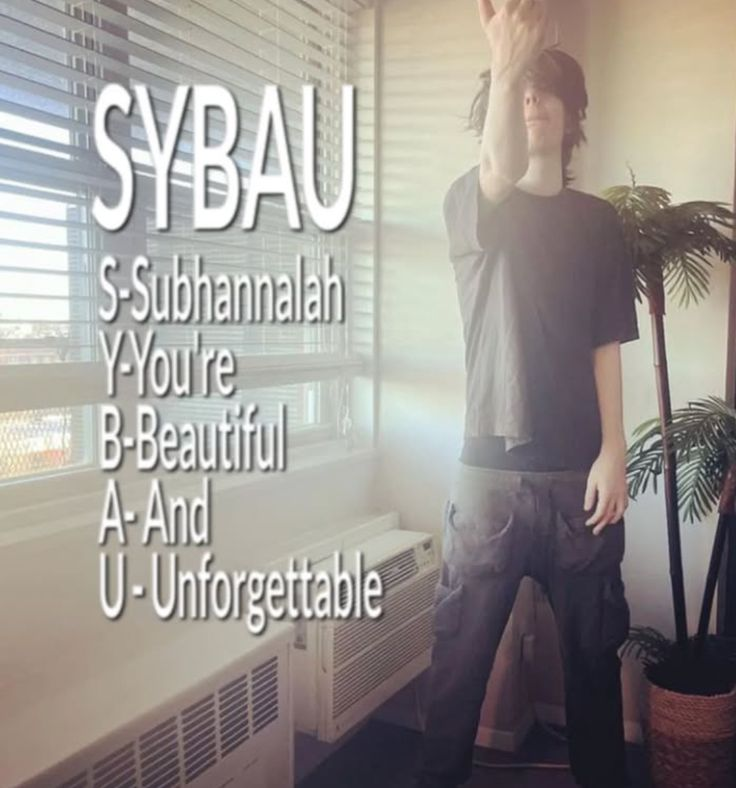

di tengah kota woodland yang kecil dan lembap, ada satu tempat yang gak pernah tutup. bukan karena bisnisnya bagus, tapi karena pemiliknya bilang “kalo tutup, dengerannya malah makin ramai.” itu adalah café woodland — bangunan tua bata merah yang kayaknya udah ada sebelum listrik ditemukan, dan entah kenapa, semua orang di kota ini pernah punya cerita di sana.
kalau lu lewat depan café itu malam-malam, jendelanya selalu berkabut, dan dari luar cuma kedengeran suara sendok ketemu gelas. tapi kalau lu masuk, rasanya kayak masuk ke waktu yang gak jalan. dindingnya dipenuhi foto hitam putih orang-orang yang gak ada yang kenal, kursinya dari kayu yang udah bunyi *krek krek* tiap didudukin, dan lampunya kuning redup kayak bohlamnya udah capek kerja. tapi justru di situ daya tariknya.
sebagian orang bilang, café itu punya “jiwa”. sebagian lagi bilang, itu cuma efek kopi basi. tapi yang pasti, café woodland udah jadi tempat di mana cerita-cerita kota itu ngumpul, dari yang paling lucu sampe yang paling gak pantas disebut di depan umum. dan kami — tim dokumenter kecil yang nekat nginep di sana selama 3 malam — denger semuanya.
malam pertama di café woodland sunyi banget. cuma ada suara jam tua dan kipas angin yang nyeret napas kayak habis olahraga. tapi sekitar jam 11, ada seorang lelaki tua duduk di pojokan, bawa termos sendiri. katanya dia gak pernah minum kopi café itu lagi sejak “kejadian 1997”.
katanya dulu, seorang barista baru nyoba resep kopi “anti ngantuk” buat anak kuliahan. hasilnya? satu batch kopi itu bikin semua yang minum melek selama 3 hari, tapi tiap kali mereka merem, katanya ada suara orang bisik-bisik nyuruh mereka “balik ke café”. waktu polisi nyelidikin, mereka nemuin jejak sepatu basah menuju ke ruang bawah tanah. tapi ruangan itu gak ada di blueprint bangunan.
waktu kami tanya ke pemilik café, dia cuma senyum kecil dan bilang, “ah, itu cuma marketing lama.” terus dia nutup pintunya rapat-rapat kayak takut angin bisa denger.
meja nomor 4 katanya “angker tapi santai.” semua pasangan yang duduk di situ selalu putus dalam waktu kurang dari seminggu. tapi bukan karena hal mistis — katanya karena di bawah meja itu ada coretan bekas seseorang yang nulis “semua cinta di sini sementara.” romantis, tapi juga toxic banget.
tapi di sisi lain, di meja yang sama, banyak juga ide besar lahir. satu band lokal katanya nemu nama band mereka di situ (“broken espresso,” dan ya, mereka cuma punya satu lagu). ada juga politisi yang katanya nulis janji kampanye pertama di sana, lalu ditangkap dua tahun kemudian karena ketahuan bohong. mungkin kutukannya bukan soal cinta, tapi soal kejujuran.
malam itu kami duduk di meja itu sambil nyatet hal-hal kecil. setiap kali jam berdetak, lampunya agak redup. dan di satu titik, kami denger suara orang ketawa pelan padahal café udah kosong. kayak seseorang ngedengerin kami dari balik dinding. tapi lucunya, tiap kali kami berhenti nulis, suara itu juga berhenti. coincidence? maybe. creepy? definitely.
ada satu kursi di dekat jendela, katanya disiapin khusus buat “pelanggan tetap.” pemilik café manggilnya “pak rudi.” tapi gak ada yang pernah liat mukanya jelas. yang aneh, tiap pagi kursi itu selalu ada bekas kopi baru, tapi kasir gak pernah ngepos transaksi apa pun. pernah suatu kali pelayan coba duduk di situ — besoknya dia resign, bilang dia mimpi didudukin balik sama “orang yang haus banget.”
lucunya, di sisi lain, pelanggan-pelanggan biasa malah suka kursi itu buat konten TikTok. mereka nyalain kamera, rekam suasana “spooky aesthetic,” lalu kaget pas minum kopinya — rasanya asin. bukan karena garam, tapi karena air matanya sendiri waktu liat hasil editan malah blur semua. klasik woodland.
café woodland juga jadi tempat lahirnya cerita-cerita absurd yang gak bisa lu jelasin tapi terlalu lucu buat gak diceritain. contohnya si barista lama, “gilang,” yang katanya ngelamar pacarnya di café itu. dia naro cincin di latte art. romantis banget, kan? sayangnya, ceweknya alergi kopi. langsung dilarikan ke rumah sakit. sekarang latte art itu digantung di dinding café — bekas busanya udah kering, tapi bentuk hatinya masih kelihatan kayak bekas luka.
ada juga rumor soal kucing hitam yang suka nongol tiap hujan. katanya kalau lu kasih dia sisa kue, keesokan harinya lu dapet “keberuntungan.” tapi keberuntungan itu aneh. ada yang tiba-tiba nemu uang 500 ribu di dompet, tapi dompetnya ilang minggu depannya. ada juga yang tiba-tiba viral di medsos, tapi gara-gara jatuh di got. balance, katanya.

malam terakhir di café woodland, suasananya beda. anginnya kayak lebih berat, dan kopi kami rasanya... agak pahit, tapi bukan karena bubuknya gosong — kayak pahit nostalgia gitu. pemilik café duduk bareng kami dan akhirnya cerita sedikit.
katanya, café ini dulu dibangun di atas reruntuhan rumah seorang pianis yang meninggal sendirian. piano lamanya masih di ruang bawah tanah, katanya kadang suka bunyi sendiri. “tapi bukan piano yang nyanyi,” katanya sambil senyum tipis, “tempatnya yang bernapas.” dia ngaku gak berani renovasi besar karena takut “kenangannya kabur.”
pas kami mau pulang, tiba-tiba listrik kedip sekali. di jendela, kami liat siluet orang berdiri, nunduk, kayak nunggu pesanan. tapi pas kami buka pintu — kosong. cuma aroma kopi yang udah dingin, dan suara pintu café nutup pelan sendiri. entah kenapa, semua dari kami sepakat: tempat itu bukan sekadar bangunan. dia kayak teman lama yang gak bisa move on.
café woodland masih buka sampai sekarang. gak pernah pasang iklan, gak pernah diskon, tapi selalu rame. kadang pengunjung datang bukan buat minum, tapi buat dengerin. katanya, kalau lu duduk cukup lama, lu bakal denger satu cerita — entah tentang cinta, dosa, atau rahasia kecil yang seharusnya gak diceritain. tapi café ini gak milih. dia cuma nyimpen.
mungkin itu kenapa orang-orang terus balik. bukan karena kopinya, tapi karena mereka pengen diinget. karena café woodland, entah gimana caranya, bikin semua yang datang ngerasa penting — bahkan yang cuma numpang nangis di toilet.
dan di akhir semua itu, café ini berdiri seperti biasa, diam, tapi hidup. saksi bisu dari setiap tawa, gosip, aib, dan air mata. tempat yang kalau dengerin cukup lama, bisa bikin lu sadar: semua kenangan itu cuma kopi. pahit, manis, dan kalau didiemin terlalu lama... akhirnya dingin juga.